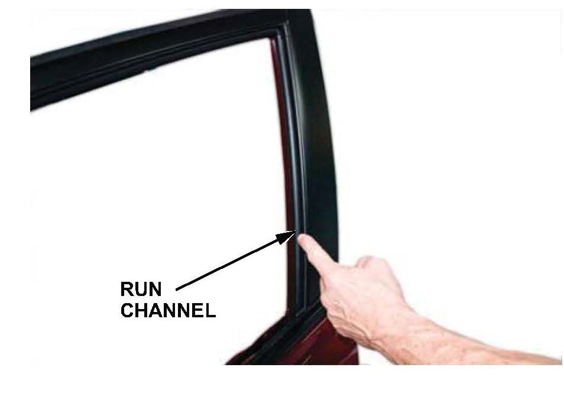
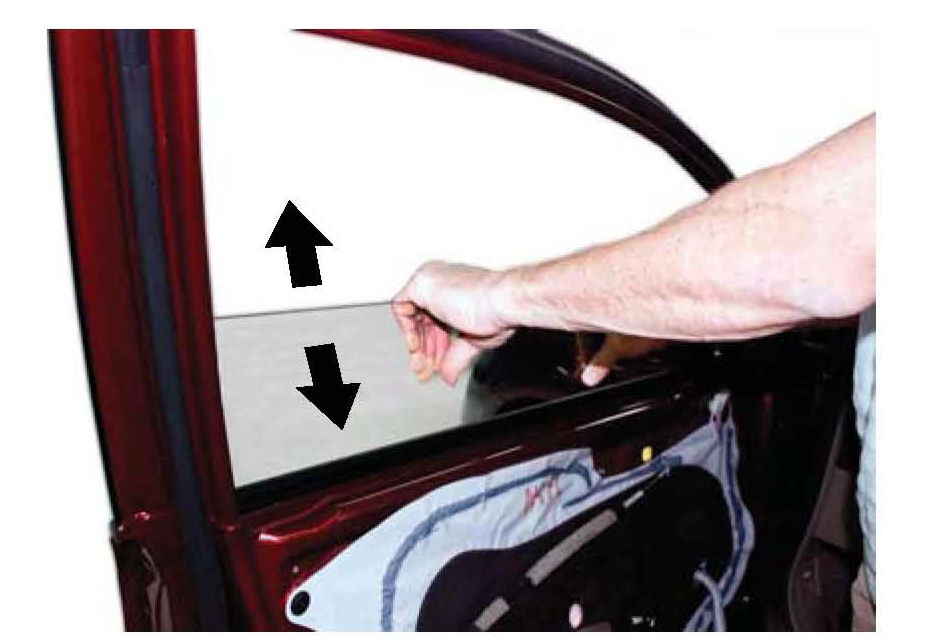
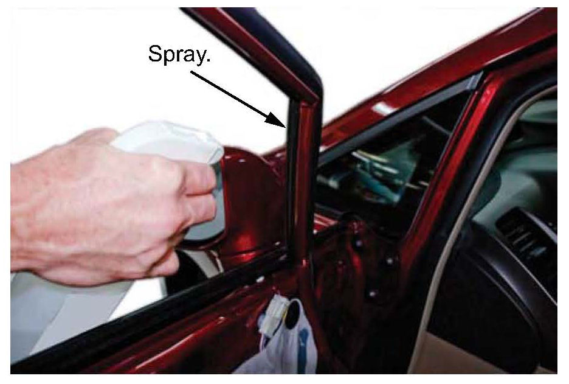
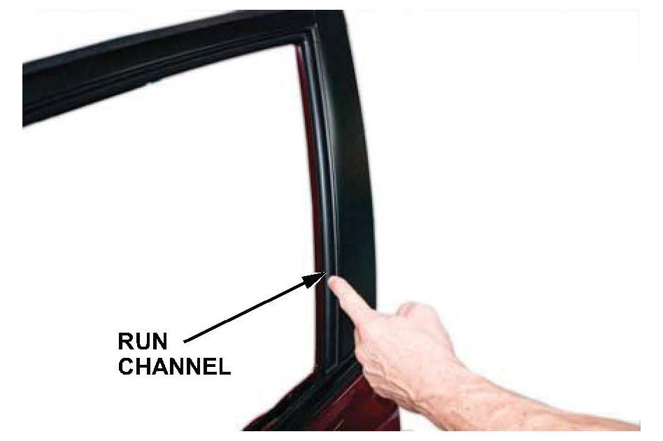
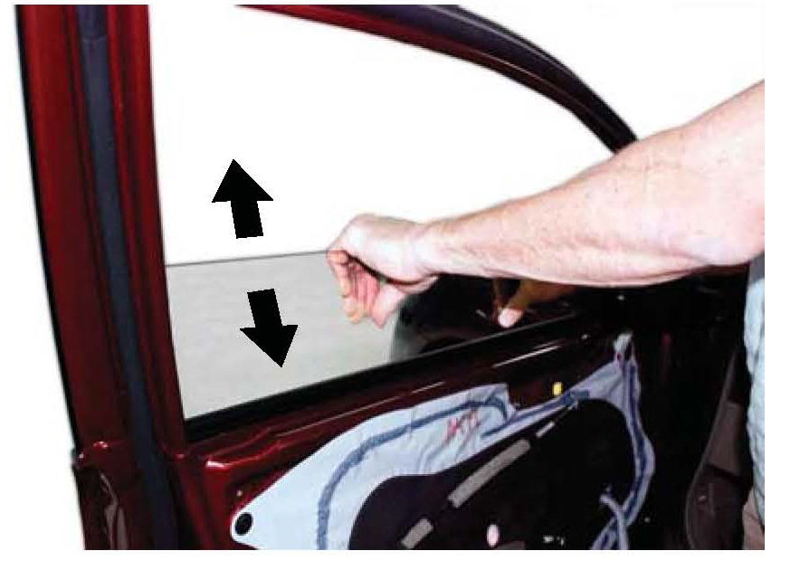
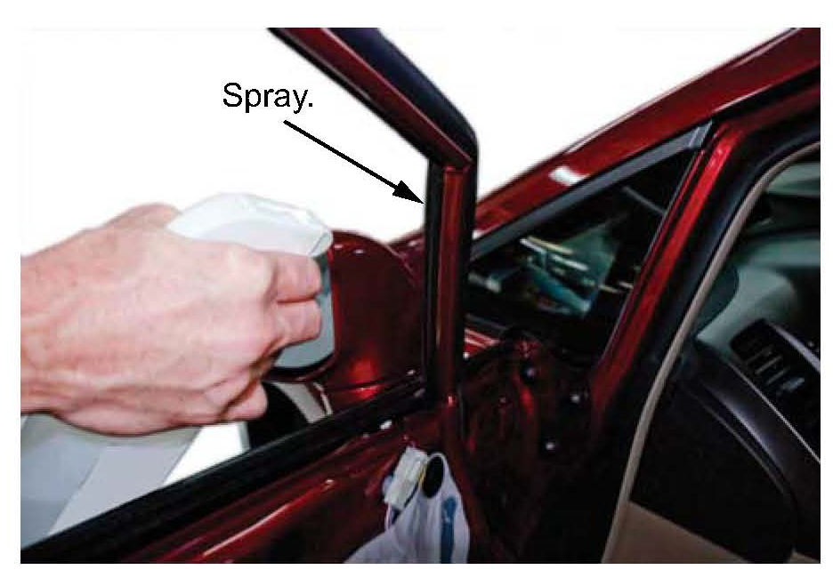

Windows: Testing and Inspection
NOTE: This article created from TSB #10-014 dated 5/25/2010
Service Data Update: Power Window Goes Up and Reverses On Its Own, Is Slow to Open and Close, or Squeals, Creaks, Clunks, or Clicks
BACKGROUND
The information in this service bulletin addresses three power window problems that are not currently covered in the service data.
SYMPTOM 1
When using the auto-up function, the driver's or front passenger's window goes up and then reverses on its own.
PROBABLE CAUSE
The power window control unit needs to be reset, or the run channel is damaged or dirty.
NOTE:
Do the power window control unit reset procedure first. If the window still doesn't work, go to Symptom 2.
REPAIR PROCEDURE
NOTE:
You must do the manual reset from the power window switch at the affected window. For example, if you're resetting the front passenger's power window control unit, do it from the front passenger's power window switch, not the driver's power window master switch.
1. Turn the ignition switch to ON (II).
2. Lower the window all the way down with the power window switch.
3. Open the driver's or front passenger's door.
NOTE: Do steps 4 thru 7 within 5 seconds of each other. Do these steps a total of four times in a row. These steps clear the control unit's memory.
4. Turn the ignition switch to LOCK (0).
5. Push down and hold the power window switch.
6. Turn the ignition switch to ON (II).
7. Release the power window switch.
NOTE:
Make sure the auto-up feature doesn't work. If it does, do steps 4 thru 7 again, paying close attention to the 5-second time limit for up to three more times for each series of steps.
8. Lower the window all the way down with the power window switch.
9. Pull up and hold the power window switch until the window goes all the way up, then keep holding the switch for 1 second.
NOTE:
Make sure the auto-up/down feature works correctly by lowering and raising the window with the power window switch. If it doesn't work correctly, repeat the manual reset several times, paying close attention to the 5-second time limit. If it still doesn't work, troubleshoot the power window circuit. Then continue with Symptom 2.
SYMPTOM 2
The windows are slow to open.
PROBABLE CAUSE
The run channel is damaged or dirty.
REQUIRED MATERIALS
Shin-Etsu Grease: P/N 08798-9013
REPAIR PROCEDURE
NOTE:
Aftermarket window tinting will also cause the window to move slower and is not covered by the manufacturer's warranty. No repair attempts should be made if the window has aftermarket tinting.
1. Compare the up and down speed of the affected window to another like vehicle:
^ If the speed is the same as the other vehicle, no further troubleshooting is required.
^ If the speed is not the same, remove the door panel and the door glass, then check the window regulator speed.
^ If the speed is the same as it was with the glass in place, replace the window regulator.
^ If the speed is faster without the glass, go to step 2.
NOTE:
When evaluating regulator performance without the glass, never allow the regulator to travel to the full up position because damage can occur to the regulator.
2. Inspect the visible portion of the run channel for damage.
^ If the run channel is visibly damaged, replace it, then recheck the window speed.
^ If the run channel looks OK, go to step 3.
3. Reinstall the glass into the door without bolting it to the regulator, then manually slide it through its range of travel and check for excessive resistance:
^ If the resistance is excessive, go to step 4.
^ If the resistance is not excessive, go to step 5.
4. Inspect the run channel alignment, both inside and outside the door. Pay close attention just below the door skin; this is a common area for the run channel to be pinched.
^ If the run channel is pinched, replace it, then adjust the run channels and the glass as needed.
^ If the run channel is not pinched, go to step 5.
5. Clean the run channel using a soapy water solution, then apply Shin-Etsu grease. You may also need to clean the portion of the run channel within the door.
6. Reinstall all removed parts.
SYMPTOM 3
During operation, the window squeaks, creaks, clunks, or clicks.
REQUIRED MATERIALS
Shin-Etsu Grease: P/N 08798-9013
REPAIR PROCEDURE
NOTE:
Aftermarket window tinting will also cause the window to move slower and is not covered by the manufacturer's warranty. No repair attempts should be made if the window has aftermarket tinting.
1. Compare the up and down speed of the affected window to another like vehicle:
^ If the speed is the same as the other vehicle, no further troubleshooting is required.
^ If the speed is not the same, remove the door panel and the door glass, then check the window regulator speed.
^ If the speed is the same as it was with the glass in place, replace the window regulator.

^ If the speed is faster without the glass, go to step 2.
NOTE:
When evaluating regulator performance without the glass, never allow the regulator to travel to the full up position because damage can occur to the regulator.
2. Inspect the visible portion of the run channel for damage.
^ If the run channel is visibly damaged, replace it, then recheck the window speed.
^ If the run channel looks OK, go to step 3.
3. Reinstall the glass into the door without bolting it to the regulator, then manually slide it through its range of travel and check for excessive resistance:
^ If the resistance is excessive, go to step 4.

^ If the resistance is not excessive, go to step 5.
4. Inspect the run channel alignment, both inside and outside the door. Pay close attention just below the door skin; this is a common area for the run channel to be pinched.
^ If the run channel is pinched, replace it, then adjust the run channels and the glass as needed.
^ If the run channel is not pinched, go to step 5.

5. Clean the run channel using a soapy water solution, then apply Shin-Etsu grease. You may also need to clean the portion of the run channel within the door.
6. Reinstall all removed parts.
REPAIR PROCEDURE
1. Compare the window's noise level to another like vehicle:
^ If the noise is the same, no repair is needed. Advise the client that some noise is a normal characteristic.
^ If the noise is different from the other vehicle, go to step 2.
2. Inspect the run channel for damage.
^ If it is damaged, replace it, then recheck the noise level.

^ If the run channel is not damaged, go to step 3.
3. Remove the door panel.
4. Unbolt the glass from the regulator, then manually slide it through its travel to check for excessive resistance.
^ If the resistance is excessive, go to step 5.

^ If the resistance is not excessive, go to step 6.
5. Clean the run channel using a soapy water solution, then apply Shin-Etsu grease inside the channel. You may also need to clean the portion of the run channel within the door.
^ If the window operates normally after cleaning and applying grease, no further action is required.

^ If the window noise symptoms are still present, go to step 6.
6. Inspect the run channel alignment, both inside and outside the door. Pay close attention just below the door skin; this is a common area for the run channel to be pinched.
^ If the run channel is pinched, replace it and adjust as needed.
^ If the run channel is not pinched, continue with normal troubleshooting.
7. Reinstall all removed parts.